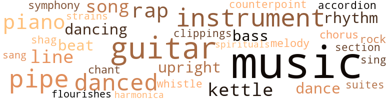
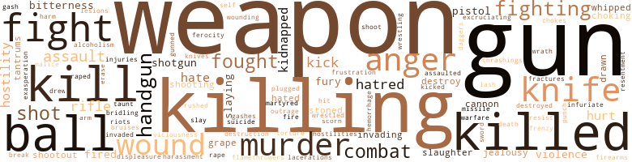
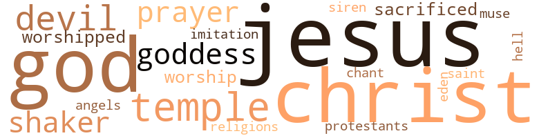

Time of the Terrorists (The), by Barker, Ben (1977)
97 music-related terms matched in this text.
Most frequent terms in this topic: music (23); guitar (9); pipe (5); danced (5); rap (4)
accordion.n.01
Definition: a portable box-shaped free-reed instrument; the reeds are made to vibrate by air from the bellows controlled by the player
| word | sentence |
|---|---|
| accordion | The day to day routine seemed compressed to them all , as if time were being squeezed together like the sides of an accordion . |
bass.n.07
Definition: the member with the lowest range of a family of musical instruments
| word | sentence |
|---|---|
| bass | She learned to play bass guitar , and took on a spot in an all-girl rock band . |
| bass | She had been playing bass guitar with an all-girl rock group . |
chorus.n.01
Definition: any utterance produced simultaneously by a group
| word | sentence |
|---|---|
| chorus | A chorus of catcalls answered the last comment , and John Zenith was relieved to see that the group understood the significance of the point that they had been discussing , but was unwilling to let it destroy their esprit de corps . |
clipping.n.01
Definition: an excerpt cut from a newspaper or magazine
| word | sentence |
|---|---|
| clippings | We 're being wiped out by our press clippings , taking bigger and bigger chances , flaunting the law . |
counterpoint.n.01
Definition: a musical form involving the simultaneous sound of two or more melodies
| word | sentence |
|---|---|
| counterpoint | One of the black men , Frank Thomas , had accompanied Judy on many a night at the Catalyst , his twelve-string guitar weaving a rich counterpoint to ther funky blues piano . |
dance.n.01
Definition: an artistic form of nonverbal communication
| word | sentence |
|---|---|
| dance | " May I have this dance , Mr. Rochon , you charmin ' , wicked Frenchman ? " |
| dance | The dance being over , he pulled away from Karen , and found himself irresistibly drawn toward the bevy of teenagers clustered about the dining room table . |
dance.v.02
Definition: move in a pattern; usually to musical accompaniment; do or perform a dance
| word | sentence |
|---|---|
| dancing | Sharp , flashing lights , jagged streaks of multi-colored lightning , exploding fireballs , dancing waves . |
dance.v.03
Definition: skip, leap, or move up and down or sideways
| word | sentence |
|---|---|
| dancing | Thoughts of joyous , unbridled revenge were dancing through his head when the sudden , jolting sound of a car door slamming shut brought his senses briskly alert . |
| danced | Later that evening , Heidi nestled her head against Pierre 's chest and studied the flickering candlelight that danced insanely on the walls and the ceiling . |
| danced | An eerie electronic squeal splintered his being into a thousand small , golden daggers that danced in syncopated , synchronous , staccato leaps through the void of the universe . |
| danced | This symphonic translation of sound into motion danced within her , awakening her own body into an essential role in the primitive ballet . |
| danced | The weapon danced in her hand , and a fierce intensity came into her eyes . |
| danced | Despite the obliteration of his African heritage from his mind , despite the bigotry that the man had seen , the light still danced . |
flourish.n.05
Definition: (music) a short lively tune played on brass instruments
| word | sentence |
|---|---|
| flourishes | He liked the Zenith , liked toying with it , signing it with bold flourishes , regarding its Patrician curvatures . |
guitar.n.01
Definition: a stringed instrument usually having six strings; played by strumming or plucking
| word | sentence |
|---|---|
| guitar | The funky beat of Judy 's piano was joined , quietly and unobtrusively , by the humming of a twelve-string guitar . |
| guitar | One of the men had brought a guitar , which he soon uncased , and the crowd broke into a subdued , but spontaneous song . |
| guitar | As the mellow tones of the twelve-string guitar reverberated around the sand encampment , now jammed full with laughing , talking friends , Heidi edged over toward Pierre and Karen . |
| guitar | They sat silently for a long span of moments , the soft strains of the guitar around them , and the warmth of the flames shielding them from the night air . |
| guitar | One of the black men , Frank Thomas , had accompanied Judy on many a night at the Catalyst , his twelve-string guitar weaving a rich counterpoint to ther funky blues piano . |
| guitar | Finishing the song , Frank replaced the guitar in its case and walked toward his car . |
| guitar | She learned to play bass guitar , and took on a spot in an all-girl rock band . |
| guitar | She had been playing bass guitar with an all-girl rock group . |
| guitar | Behind the voice , a heavy guitar beat was building , until it drowned out the voice with melancholy vibrations that hung from the rafters of the room . |
harmonica.n.01
Definition: a small rectangular free-reed instrument having a row of free reeds set back in air holes and played by blowing into the desired hole
| word | sentence |
|---|---|
| harmonica | Then the harmonica struck , its haunting tones finding the notes that the voice had searched for but could not reach . |
kettle.n.04
Definition: a large hemispherical brass or copper percussion instrument with a drumhead that can be tuned by adjusting the tension on it
| word | sentence |
|---|---|
| kettle | The lively discussion was still in full swing , and Judy Peters was poking away at a large black kettle hanging over the campfire . |
| kettle | The crisp campfire crackled as Judy scooped up large portions of beans from the black kettle and passed a plate toward Pierre and Karen . |
| kettle | " Coffee for the road ? " she asked , barely giving them an opportunity to answer before placing a small copper kettle over the gas burner . |
melody.n.02
Definition: the perception of pleasant arrangements of musical notes
| word | sentence |
|---|---|
| melody | He knew that it had to be a black spiritual , a haunting melody of the forgotten past . |
music.n.01
Definition: an artistic form of auditory communication incorporating instrumental or vocal tones in a structured and continuous manner
| word | sentence |
|---|---|
| music | The quiet music calmed him , as did Karen 's continuing back rub , and he saw no harm in letting the world drift by for awhile . |
| music | So , it was Karen in the morning , Marian in the evening , and music and marijuana all day long . |
| music | A brilliant student of serious music , with a wide range of interests , she drew Heidi effortlessly into her version of the campus mainstream . |
| music | The insistent beat of the music from his stereo system pulled at the back of his brain , and his thoughts wandered to what he would have to do . |
| music | Revolution is squeezed between rock music and group sex . |
| music | Norman Davis swayed to the music , and smiled at his girl . |
| music | He poured himself a glass of burgundy , and settled back to listen to the music , which flowed over them all in rich , harmonious tones . |
| music | " The sounds from the stereo enveloped me in waves of sensory vibration , and the music was converted to visual patterns inside my head . |
| music | He stopped straining to move , and felt the music envelop him , blurring out the limits of his body as he disappeared into the sound . |
| music | Now , he was the music too , the essence of his being pulsating in great waves of iridescent color and sound across the blank , cool darkness of the room . |
| music | Her soft breasts passed over the prominence of his sexual organ , and the blood rushed headlong toward it , becoming entrapped in the engorged erection , which now seemed to throb with the music as Karen continued her sensuous course along his frame . |
| music | There was music coming from somewhere . |
| music | Relaxing music , melodious , full , and haunting . |
| music | She stopped fighting against her lids and let the music take hold , transporting her to another state of weak somnolence . |
| music | The music was beautiful . |
| Music | Music so nice . |
| music | Each note of the music that she also heard appeared to be transmuted into a fragment of motion of his body . |
| music | Her own undulations blended into the music too , into an eerie tableau of unitary existence . |
| music | A genial , beautiful genius who composed music as easily as others composed sentences . |
| music | She turned the volume up , since her parents were at the lake for the weekend , and could n't possibly object , as they usually did , to both her choice of music and the volume at which she played it . |
| music | With the music braying insistently at her ears , she found two of them , then leaped back into bed to scan their salacious pages . |
| music | As they entered the doorway , the music drew them into the party . |
| music | She pulled him to her insistently , curling the fullness of her body against him , and began to sway to the slow beat of the music . |
| music | Pierre moved sensuously with her , the throbbing sound stroking his brain , reminding him of the black music of Houston again , and of the man who had picked him up off the street when he was hardly more than a carcass , scared and starving , with a knife wound in his side . |
musical_instrument.n.01
Definition: any of various devices or contrivances that can be used to produce musical tones or sounds
| word | sentence |
|---|---|
| instruments | Talcing the appropriate instruments from a series of cabinets on one side of the room , Harold Tillman seemed a man in a trance . |
| instruments | It , and the technical experts who attempt to reduce the human condition to a series of equations , will be the instruments of our destruction unless halted , and halted soon . |
| instruments | She seemed to be so fascinated by the military , and by instruments of war . |
| instrument | The hard contractions had become almost continuous , so she gave Heidi a potent injection of morphine again , and started searching for a sharp instrument with which to terminate the anguished nightmare . |
| instrument | Frank swung the strap of the instrument about his shoulder , and began to pick and sing one of Judy 's favorite songs as the dirt fell in shovelfuls onto the plain casket . |
| instrument | He could almost see the face hunched over the recording microphone , blowing into the instrument with gasping breath , and the sensitivity of three hundred years of suffering and persecution . |
piano.n.01
Definition: a keyboard instrument that is played by depressing keys that cause hammers to strike tuned strings and produce sounds
| word | sentence |
|---|---|
| piano | He taught me a whole hell of a lot more than how to play the piano , and the folks still think that he 's a faggot . " |
| piano | Judy , as it turned out , played piano with a small modern jazz group at a suburban night club called the Birdcage . |
| piano | The funky beat of Judy 's piano was joined , quietly and unobtrusively , by the humming of a twelve-string guitar . |
| piano | One of the black men , Frank Thomas , had accompanied Judy on many a night at the Catalyst , his twelve-string guitar weaving a rich counterpoint to ther funky blues piano . |
pipe.n.04
Definition: a tubular wind instrument
| word | sentence |
|---|---|
| pipe | Several tons of iron plumbing pipe , in widths varying from three-quarter inch to a foot-and-a-half , were stacked longitudinally onto the rig 's flat beds as it bore down on the intersection . |
| pipe | The driver saw the petite figure leave the curb , touched the brake for an instant , had a momentary vision of his own body being impaled by the several tons of pipe , then lifted his foot . |
| pipe | She peeled the foil away , placed a small chunk of the material in the cup of a metallic pipe , and struck a match . |
| pipe | Sucking forcefully on the stem , she ignited the gummy substance , took a deep drag , and passed the pipe to Suzanne . |
| pipes | The circular platform , with its one-inch latticework of pipes , creaked to a halt as they wrestled , the gritty silica biting into their flesh . |
| pipe | Around them lay a tortuous puzzle of shadows cast by the incandescent glow of moonlight falling upon the iron pipe pattern of the monkey bars . |
rap.n.05
Definition: genre of African-American music of the 1980s and 1990s in which rhyming lyrics are chanted to a musical accompaniment; several forms of rap have emerged
| word | sentence |
|---|---|
| rap | He was already on the run from a bum rap in Louisiana , and things would be totally screwed again if the old bastard crapped out . |
| rap | Anyone who looked like he was going to exert any type of charismatic radical leadership found himself busted on some petty rap like possession . |
| rap | No education , no employment record , a fugitive on the run from a damned frame-up murder rap . |
| rap | He split from Oakland because of a bum rap , and is waiting for his scene to cool . |
rhythm.n.01
Definition: the basic rhythmic unit in a piece of music
| word | sentence |
|---|---|
| beat | You 're a troublemaker , though , and if I catch you or your old man squatting on my beat again , I 'm going to reopen that fat lip . |
| Beat | " Beat 'em or bullshit 'em . |
rhythm.n.04
Definition: the arrangement of spoken words alternating stressed and unstressed elements
| word | sentence |
|---|---|
| rhythms | His eyes were closed , and he could hear the exotic rhythms pulsating from the radio that he had left on . |
| rhythm | Like sweet lemonade , the liquid slipped warmly into his system , and the rhythm of the party began to come back to him . |
rock_'n'_roll.n.01
Definition: a genre of popular music originating in the 1950s; a blend of black rhythm-and-blues with white country-and-western
| word | sentence |
|---|---|
| rock | Revolution is squeezed between rock music and group sex . |
section.n.01
Definition: a self-contained part of a larger composition (written or musical)
| word | sentence |
|---|---|
| section | Without hesitation , he called the classified section of the paper and placed the required item . |
shag.v.01
Definition: dance the shag
| word | sentence |
|---|---|
| shag | Inside , the rooms were plastic modern , with shag carpets and postage-stamp sized kitchens . |
sing.v.02
Definition: produce tones with the voice
| word | sentence |
|---|---|
| sing | Frank swung the strap of the instrument about his shoulder , and began to pick and sing one of Judy 's favorite songs as the dirt fell in shovelfuls onto the plain casket . |
| sang | He listened , and felt himself jarred back in time by the plaintive wail of a deep , rasping black voice that sang of overwhelming sorrows in virtually unintelligible moans . |
song.n.01
Definition: a short musical composition with words
| word | sentence |
|---|---|
| song | One of the men had brought a guitar , which he soon uncased , and the crowd broke into a subdued , but spontaneous song . |
| songs | Frank swung the strap of the instrument about his shoulder , and began to pick and sing one of Judy 's favorite songs as the dirt fell in shovelfuls onto the plain casket . |
| song | Finishing the song , Frank replaced the guitar in its case and walked toward his car . |
spiritual.n.01
Definition: a kind of religious song originated by Blacks in the southern United States
| word | sentence |
|---|---|
| spirituals | The sound was the same as the spirituals that had filled his ears back in Texas , so long ago , when he had been on the run , and the old man had taken him in . |
suite.n.01
Definition: a musical composition of several movements only loosely connected
| word | sentence |
|---|---|
| suites | In due course , it reached the hands of agent Stanley Marshall , who dutifully brought a copy to the luxurious office suites of Warren Hamilton Fulton . |
symphony.n.01
Definition: a long and complex sonata for symphony orchestra
| word | sentence |
|---|---|
| symphony | The blasts shattered the glass of several windows , and the symphony of violent sounds mingled with the smell of burning rubber as the automobile sped away with Lisa trapped tearfully on the floor of the rear compartment . |
tone.v.01
Definition: utter monotonously and repetitively and rhythmically
| word | sentence |
|---|---|
| chant | She began to move her hips slowly and rhythmically , massaging his engorged organ beneath her pubis as she began to chant to the wind . |
tune.n.01
Definition: a succession of notes forming a distinctive sequence
| word | sentence |
|---|---|
| line | You handle the money , you discipline the chicks when they get out of line , you run the pad . |
| line | " Photographs are taken at mass demonstrations and studied by beady-eyed little suckers who want everyone to stay in line . |
| line | Annoyed at the prolonged absence of his secretary , Warren Fulton answered the private line in his suite on the fifth ring . |
| strains | These qualities had allowed their relationship to persist despite the many strains and abuses that she had heaped upon it . |
upright.n.02
Definition: a piano with a vertical sounding board
| word | sentence |
|---|---|
| upright | Abandoning the rented cars in the covered parking lot two blocks from the wharf , the group loaded both loot and ammunition into cardboard barrels standing upright in the rear of the green vans . |
| upright | Outside , Lisa sat bolt upright when she spotted the couple weaving toward the parked van . |
whistle.v.01
Definition: make whistling sounds
| word | sentence |
|---|---|
| whistle | You blew the whistle on us , led them to us like a Judas goat . |
385 violence-related terms matched in this text.
Most frequent terms in this topic: gun (24); killing (21); killed (19); kill (18); weapon (18)
aggravation.n.01
Definition: an exasperated feeling of annoyance
| word | sentence |
|---|---|
| exasperation | It was Karen 's turn to express exasperation and disdain . |
alcoholism.n.01
Definition: habitual intoxication; prolonged and excessive intake of alcoholic drinks leading to a breakdown in health and an addiction to alcohol such that abrupt deprivation leads to severe withdrawal symptoms
| word | sentence |
|---|---|
| alcoholism | Children go unwashed and uncared for as their parents sink into alcoholism or drug addiction . |
anger.n.01
Definition: a strong emotion; a feeling that is oriented toward some real or supposed grievance
| word | sentence |
|---|---|
| anger | In two years , she had never known him to strike anyone in anger , then this ! |
| anger | Tears of anger , fear , and frustration licked at the corners of his eyes as he sped toward the General Hospital . |
| anger | Suzanne 's voice was shrill with anger . |
| anger | The points that he brought out are every bit as important as he implied , and are frequently overlooked by slipshod individuals who set out to overthrow the government in haste and anger , without adequate planning and preparation . |
| anger | She straightened up , a tinge of anger coloring her words . |
| anger | Norman clenched his teeth in anger , drew his hunting knife from the scabbard at his belt , and began to deliberately hone the sharpened edge on a whetstone . |
| anger | Suzanne 's anger festered like a malignant wound , seething beneath her placid exterior . |
| anger | Her anger tumbled off her like falling dust , to be replaced by a morose depression . |
| anger | John Stanton 's eyes did not move from the road as he drove , his face concealing a cloud of anger behind a placid exterior . |
| Anger | Anger clouded her brow as she almost shrieked , " It 's over ! |
| anger | A knot formed in Stanton 's jaw muscles as he struggled to contain his anger . |
assail.v.01
Definition: attack someone physically or emotionally
| word | sentence |
|---|---|
| assaulted | Though John slipped mercifully into unconsciousness , Lorraine remained hysterically awake as they were both cuffed , shackled , beaten , raped , and perversely assaulted . |
battle.v.01
Definition: battle or contend against in or as if in a battle
| word | sentence |
|---|---|
| combat | To combat the desolate solitude , he purchased a copious quantity of alcoholic beverages on the very night of his dear mother 's demise , and began to place phone calls to many of his friends . |
| combat | Self-discipline techniques must be mastered to combat this destructive element . |
bleeding.n.01
Definition: the flow of blood from a ruptured blood vessel
| word | sentence |
|---|---|
| hemorrhage | Her pulse , respirations , and color were good , and there was no evidence of significant hemorrhage . |
bridle.v.01
Definition: anger or take offense
| word | sentence |
|---|---|
| bridling | Perhaps Pierre was bridling him , that was quite common . |
bruise.n.01
Definition: an injury that doesn't break the skin but results in some discoloration
| word | sentence |
|---|---|
| bruises | A few cuts and bruises . |
cannon.n.04
Definition: heavy automatic gun fired from an airplane
| word | sentence |
|---|---|
| cannon | It 's a cannon . |
| cannon | What a hell of a place to make it in , the armory , surrounded by jeeps , and cannon , and dozens of rifles stacked against the wall in locked rows . |
contemn.v.01
Definition: look down on with disdain
| word | sentence |
|---|---|
| scorn | Many speculated , quite erroneously , that the ghetto poor would scorn the distribution , thus demonstrating their displeasure toward the outlaw gang that had so viciously pitted itself against society . |
craze.n.02
Definition: state of violent mental agitation
| word | sentence |
|---|---|
| frenzy | You 're working yourself into a frenzy . |
cut.n.05
Definition: a wound made by cutting
| word | sentence |
|---|---|
| gashes | These blows opened deep , long gashes in the tender , milk-white facial skin of John Zenith , and simultaneously threw him into a state of semicoma . |
| gash | He crumpled beneath the force of the assault as a metallic gun butt opened a deep gash on his cheek . |
dagger.n.01
Definition: a short knife with a pointed blade used for piercing or stabbing
| word | sentence |
|---|---|
| daggers | An eerie electronic squeal splintered his being into a thousand small , golden daggers that danced in syncopated , synchronous , staccato leaps through the void of the universe . |
death.n.08
Definition: the act of killing
| word | sentence |
|---|---|
| death | " The fuzz do n't even have a death penalty to fall back on . |
destroy.v.04
Definition: put (an animal) to death
| word | sentence |
|---|---|
| Destroy | Destroy it , cast it aside , start anew . " |
| destroyed | She rebelled against the discipline of a rigid father , and saw him almost physically destroyed when he showed up to reclaim her . |
| destroy | Government flunkies , ignited by the scope of the revolutionary 's fame , come running to society 's rescue , infiltrate the unit , and destroy it from without . " |
displeasure.n.01
Definition: the feeling of being displeased or annoyed or dissatisfied with someone or something
| word | sentence |
|---|---|
| displeasure | Many speculated , quite erroneously , that the ghetto poor would scorn the distribution , thus demonstrating their displeasure toward the outlaw gang that had so viciously pitted itself against society . |
draw.v.23
Definition: pull (a person) apart with four horses tied to his extremities, so as to execute him
| word | sentence |
|---|---|
| drawn | I 've drawn up several attack plans for limited strike forces . |
| drew | Withdrawing an almost identical brown bottle , he drew up fifteen milligrams of morphine , a whopping first dose , and walked over toward his lover . |
| drawn | The dance being over , he pulled away from Karen , and found himself irresistibly drawn toward the bevy of teenagers clustered about the dining room table . |
erase.v.01
Definition: remove from memory or existence
| word | sentence |
|---|---|
| erase | They want to erase the black , kill the black part of themselves . |
ferociousness.n.01
Definition: the trait of extreme cruelty
| word | sentence |
|---|---|
| viciousness | Suzanne screamed , her mind overwhelmed by the complete viciousness of the attack on Whipper , who now lay unconscious on the floor . |
ferocity.n.01
Definition: the property of being wild or turbulent
| word | sentence |
|---|---|
| ferocity | Sidestepping the frenzied charge of the broad-shouldered man who had struck him , Pierre let loose a gutteral roar , and drove his right foot into the man 's flank with savage ferocity . |
fight.n.02
Definition: the act of fighting; any contest or struggle
| word | sentence |
|---|---|
| fighting | At least Norman is going down fighting . " |
| combat | Twenty years of his life , with combat tours in both Italy and Korea , and now this ! |
| combat | He was an experienced combat officer , a valuable asset to his country and to the service , and he was being put out to pasture while still in his physical and intellectual prime . |
| combat | You 're an exciting man , part of a dying breed of noble warriors who dedicated their lives to combat . |
| combat | John Zenith Stanton evolved into an equally ideal combat soldier . |
fight.n.05
Definition: a boxing or wrestling match
| word | sentence |
|---|---|
| fight | They also helped her fight off the wedge of depression that threatened to enter her mind and crush her spirit . |
| fight | She began to sob and cry openly as she described the vicious fight and its consequences . |
| fight | That recognition was what had prompted him to make the police report right after the fight . |
| fight | " Big deal , " he shot back , " so she saw a fight . |
| fight | He 's not rolling over and getting screwed without a fight , licking boots , greasing dicks , and pretending to like it . " |
| fight | After the bloody fight , Jacqueline could hardly recall what had happened . |
| fight | " What about the revolution , and the fight against those who killed our friends ? " |
fight.v.02
Definition: fight against or resist strongly
| word | sentence |
|---|---|
| fought | For a moment or two , revulsion , fear , and vague terror fought for possession of her mind . |
| fight | She could not fight it , did not want to fight it , gave in gladly to it . |
| fight | She could not fight it , did not want to fight it , gave in gladly to it . |
| fought | He fought back a maddening impulse to continue to pummel them , to reduce them to pulps of inanimate matter . |
| fighting | Those guys were fighting in my house , and they damned near ripped it apart . |
| fought | He fought back a yell of sheer pain . |
| fighting | " Look , man , from what I 've heard and read , the whole scene of fighting the Establishment looks like a trick bag . |
| fight | It imposes their will onto the masses , snatches men from their homes and compels them to fight wars of colonial oppression in foreign countries , and crushes anyone who objects . |
| fought | A quick , chopping jerk that his arm unconsciously fought , sent waves of sensation through his body . |
| fighting | All you 've talked about is fighting and cosmetics . " |
| fight | They do n't fight their blackness , they deny and suppress it . |
| fought | A strange , tingling sensation ran through his limbs as he fought to lift them , only to find that he was unable to elevate even an eyebrow . |
| fought | She fought to awaken , and the room entered her consciousness , bit by hazy bit . |
| fighting | She stopped fighting against her lids and let the music take hold , transporting her to another state of weak somnolence . |
| fight | As long as secrecy is maintained , we may live within the establishment even as we fight it . |
| fight | Now , nobody is tough enough to fight . |
| fight | Unfortunately , most people make the mistake of failing to see that they can fight the machine . |
| fighting | Leroy Simpson , as tough a graduate of Oakland ghetto life as could be found , also was fighting back the tears . |
| fight | There may be some hostile studs in the ghetto itching for a chance to fight back . |
| fighting | What I need is more fighting men , and I think that this Robin Hood trip may bring them aboard . " |
| fight | Nobody from the ghetto is going to fight for a cause . |
firearm.n.01
Definition: a portable gun
| word | sentence |
|---|---|
| firearms | Greatly inspired by Norman 's unexpected natural affinity for firearms , and Pierre 's expert knowledge of them , the girls practiced diligently with their weapons . |
fit.n.01
Definition: a display of bad temper
| word | sentence |
|---|---|
| tantrums | " Did Suzanne throw another of her tantrums ? |
| tantrums | He sipped his tea slowly , realizing that the tantrums had ceased about the same time that Suzanne had started getting laid by other guys . |
flamethrower.n.01
Definition: a weapon that squirts ignited fuel for several yards
| word | sentence |
|---|---|
| flamethrowers | We will eventually need automatic weapons , grenades , flamethrowers , etc . |
fracture.n.01
Definition: breaking of hard tissue such as bone
| word | sentence |
|---|---|
| break | Your life has been nothing but one holiday after the other , and you finally get hit by one bad break , and you fall completely apart . " |
| fractures | Six agents killed in action , two in the hospital with severe burns and multiple fractures , and one missing . |
frustration.n.03
Definition: a feeling of annoyance at being hindered or criticized
| word | sentence |
|---|---|
| frustration | Tears of anger , fear , and frustration licked at the corners of his eyes as he sped toward the General Hospital . |
fury.n.01
Definition: a feeling of intense anger
| word | sentence |
|---|---|
| fury | A red sheet of fury descended across his mind as he felt other fists crushing into his side and ribs . |
| fury | Karen paused , containing her own fury . |
| fury | How had he been able to go from total , exhausted relaxation , to animal fury , to wheedling supplication so quickly ? |
gag.v.06
Definition: cause to retch or choke
| word | sentence |
|---|---|
| chokes | It oppresses him , chokes him , surrounds him . |
| choking | She dissolved into tears , her choking sobs alternating with long moments of silence on the tape . |
| choking | Months that she had spent with her family , nibbling chocolates , hiding in her room , choking back the sadness . |
grapeshot.n.01
Definition: a cluster of small projectiles fired together from a cannon to produce a hail of shot
| word | sentence |
|---|---|
| grape | After dinner , the two settled in wicker chairs under the grape arbor , for the talk that Rochon had known must come sooner or later . |
| grape | The musky scent of honeysuckle wafted through the thick , humid air past their perch in the grape arbor . |
gun.n.01
Definition: a weapon that discharges a missile at high velocity (especially from a metal tube or barrel)
| word | sentence |
|---|---|
| gun | Jam the business end of a gun up their asses , then ask for the key to the safe deposit box . |
| gun | Afterward , Suzanne asked to see his gun . |
| gun | She hefted the gun . |
| gun | He took the gun from her and laughed . |
| gun | " Baby , you do n't want to be too close to anyone hit by this gun . |
| gun | Too much gun for killing . |
| gun | He flipped the gun aside . |
| gun | An eerie , religious demeanor descended over her , and the flint-hard metallic glow of the gun reflected in her eyes as she asked , " Can you get me one , Pierre ? |
| gun | I want a gun . |
| guns | " How many guns do you own now ? " |
| guns | There 's a time for words , and a time for guns . |
| guns | Perhaps the time for guns simply has not yet arrived . " |
| guns | " You 'd better learn how to handle these guns , you might need them . " |
| gun | He had sensed the strangeness about her the first time that they had made love , when she had pulled his gun from its holster and fondled it for such a long time . |
| gun | The metal was so cold , and the gun was so large . |
| gun | The last thing that he felt was an abrupt , jarring thud as the gun discharged . |
| gun | Suzanne laughed , still riding the adrenalin high that had been coursing through her head from the moment that she had jammed the gun into the colonel 's mouth . |
| gun | He crumpled beneath the force of the assault as a metallic gun butt opened a deep gash on his cheek . |
| gun | He was not Warren Hamilton Fulton , she saw as the lone figure emerged , gun in hand . |
| gun | I 'd like to ram a gun up his ass and blow it away ! " |
| gun | Heidi carefully strung the loaded gun belts across her shoulders and her chest , then looked into the mirror . |
| gun | At the door , Pierre fired his hand gun at a pedestrian who moved in too close , then shepherded the trio of women into the small automobile . |
| gun | Strong , quiet , and deadly with either the knife or the gun . |
| gun | She gets totally manic whenever she gets her hands on a gun . |
| guns | Norman always sprouting his non-stop rhetoric , Suzanne either oiling her guns , or in bed with Heidi or Pierre , and sad-eyed Lisa lost in mourning for her lost life as she struggled vainly to become a model revolutionary . |
| gun | With the gun and everything . " |
| guns | " What do you think the fuzz is doing now , while we jack around , oiling our guns ? |
| gun | " He sacrificed the lives of his wife and two sons as surely as if he had pulled the trigger on the gun that executed them . |
| gun | His hand tightened on the gun butt . |
| gun | Lorraine 's piercing scream shattered the still silence an instant before the gun went off . |
| guns | I 've had enough of the killing and the dying ; enough guns and shooting . |
gun.v.01
Definition: shoot with a gun
| word | sentence |
|---|---|
| gunned | John Zenith gunned the engine , and they sped away . |
gunfight.n.01
Definition: a fight involving shooting small arms with the intent to kill or frighten
| word | sentence |
|---|---|
| shootout | Northbound on highway 101 , John Zenith Stanton 's face paled visibly when he heard the announcement of the shootout . |
| shootout | It just makes me feel like there 's a huge hole through my gut when I think of that shootout . |
harassment.n.01
Definition: a feeling of intense annoyance caused by being tormented
| word | sentence |
|---|---|
| harassment | Knowing that prostitution was illegal , Lorraine had expected some difficulties , some harassment , maybe even some time in jail . |
hate.n.01
Definition: the emotion of intense dislike; a feeling of dislike so strong that it demands action
| word | sentence |
|---|---|
| hatred | Unable to distinguish one from the other , she had firmly decided to lavish hatred upon both of them . |
| hatred | The florid face was twisted into a grotesque mask of hatred , with the shattered nose lending an unholy aura of evil to the contorted visage . |
| hatred | Unable to comprehend the psychodynamics of the intense hatred spilled forth in these strange , powerful , repetitive encounters , he let his mind wander on . |
| hatred | " Shit , " Suzanne 's voice dripped hatred , " you can even see the double standard in my parents . |
| hatred | His voice ran on , the crippled words spitting out , dripping with venomous hatred . |
hate.v.01
Definition: dislike intensely; feel antipathy or aversion towards
| word | sentence |
|---|---|
| hate | Sometimes I hate the son-of-a-bitch ! " |
| hate | " You hate him ? " |
| hate | You do n't seem to hate the black part of you ? " |
| hated | Shit , I did n't know that I hated the little bastard so much . " |
| hate | " That 's what made the asshole so easy to hate . |
| hated | As much as he hated the old Public Enemy route , with all its attendant jangling publicity , he sensed that it was time to implement it for this group . |
hostility.n.01
Definition: a hostile (very unfriendly) disposition
| word | sentence |
|---|---|
| hostility | There was a note of crisp hostility in her voice . |
| hostility | The crisp hostility leaped back into Karen 's voice , " Little bitch ! |
| hostility | The inventive mind of Pierre Rochon wove a brief fantasy of jealous hostility between the two young women that had begun slowly , but spiraled swiftly , and erupted into a screaming holocaust after some drinking . |
| hostilities | At that time , he reported , hostilities ceased , and a variety of other , more interesting activities had begun . |
| hostility | Still controlling her seething hostility , Karen answered slowly . |
indignation.n.01
Definition: a feeling of righteous anger
| word | sentence |
|---|---|
| outrage | Warren Fulton 's initial shock and amazement expanded into outrage as the instructions were read . |
infuriate.v.01
Definition: make furious
| word | sentence |
|---|---|
| infuriate | She purposefully left off his middle name , knowing that it would infuriate him . |
injury.n.01
Definition: any physical damage to the body caused by violence or accident or fracture etc.
| word | sentence |
|---|---|
| harm | The quiet music calmed him , as did Karen 's continuing back rub , and he saw no harm in letting the world drift by for awhile . |
| injuries | Six of the eight officers trapped within range of the seething flames perished from injuries received in the holocaust almost immediately . |
invade.v.01
Definition: march aggressively into another's territory by military force for the purposes of conquest and occupation
| word | sentence |
|---|---|
| invading | Yes , despite the perpetual presence of flaming liberals , invading waves of Hell 's Angels , bathing beauties , tourists and promoters , the landlords are , almost to a man , hard-nosed Goldwater conservatives . |
| invaded | To zero more closely in on the vibrations of the bizarre group that had just invaded his party , Phil stepped over to Karen Costi 's side and asked , " Have you known these people long , Karen ? " |
| invading | Quicksilver , the Grateful Dead , Big Brother and Janis , all flashing across the San Francisco scene at one time , almost burying that metropolis in an invading sea of psychedelic colors and flower children who flowed in from the small towns and hack lots of America . |
jealousy.n.01
Definition: a feeling of jealous envy (especially of a rival)
| word | sentence |
|---|---|
| jealousy | Finally , he overcame his jealousy about her being with other men when it became obvious that he would lose Suzanne altogether if he did n't comply . |
| jealousy | With more than a slight amount of guarded jealousy , the wiry redhead found himself thinking about the much-admired species , the man of action . |
kick_back.v.02
Definition: spring back, as from a forceful thrust
| word | sentence |
|---|---|
| kicked | Lawler 's stocky son , who himself had been kicked in the side by the Frenchman , bounced off the wall , clutching his flank , and collided with a chopping stroke across his upper lip . |
| kicks | " She 's been screwing since she was thirteen years of age , for kicks , not for bread . |
| kick | To kick out the bad guys , and start fresh and clean , with freedom and justice for all . " |
| kicks | Murder for kicks , pure kicks . " |
| kicks | Murder for kicks , pure kicks . " |
| kicks | Nobody with us is killing just for kicks . " |
kidnap.v.01
Definition: take away to an undisclosed location against their will and usually in order to extract a ransom
| word | sentence |
|---|---|
| kidnapped | The kidnapped heiress , her hands clutching an automatic weapon and her mouth screaming obscenities . |
| kidnapped | " It is speculated by some that missing heiress Lisa Fulton , kidnapped early this year by the SR A , is now a voluntary member of the rebel group . |
| kidnapped | The elaborate plan outlined would result in the release of the kidnapped heiress to authorities , and the capture of most of the SRA members in exchange for the safe passage of the defector to Mexico or South America . |
| kidnapped | Why had the group kidnapped her , as opposed to some other heiress ? |
kill.v.10
Definition: cause the death of, without intention
| word | sentence |
|---|---|
| kill | You stand there whimpering like a whipped puppy , and those mother-fuckers were trying to kill me ! " |
| kill | " He 's trying to kill me . |
| kill | The mother is a no-good pimp , and he 's trying to kill me . |
| kill | I 'll kill you . |
| kill | I 'll kill your no-good , dumb , swamp-country ass . |
| Killed | Killed by greed , fascism , and stark , unadulterated repression . |
| kill | I get into groovy scenes that start to run out of control , and pretty soon someone is trying to kill me . |
| killed | Much of the time he simply killed with matinee movies , long lunches , or anonymous strolls through the downtown streets . |
| Killing | " Killing time , lover , killing time . |
| killing | " Killing time , lover , killing time . |
| killing | Nothing but eating , screwing , sleeping , and killing time . " |
| kill | They want to erase the black , kill the black part of themselves . |
| killing | You 're killing me and my baby . |
| kill | " That 's a good point , " Pierre answered , " since to kill someone who has been a friend can never be an easy task . |
| killing | Oh , this pain is killing me ! " |
| killed | She had read enough about kidnappings to know that there was a chance that she would be killed herself . |
| killed | She assumed that somehow the police had shot and killed one of her own kidnappers , one she had not seen . |
| kill | " The only intelligent thing to do is to kill the hostage , disband , and plan never to see each other again . |
| kill | The worst thing that can happen to you is that we may kill you and put you out of your misery . |
| killed | You think that we killed your mother and your brothers . |
| killed | Your plastic daddy killed them as sure as if he had pulled the trigger himself . |
| killed | She was killed over at your daddy 's house , by that investigator guy . |
| kill | " Why did he kill her ? " |
| killing | Nobody with us is killing just for kicks . " |
| killed | " She has n't killed anyone who did n't need killing . |
| killing | There 's plenty of killing necessary in a revolution , so there will be plenty for her to do . " |
| killed | Six agents killed in action , two in the hospital with severe burns and multiple fractures , and one missing . |
| killed | " Six government men were killed , and two were critically wounded in a violent explosion that ripped through the mountain hideout last evening . |
| killing | Rochon escaped from the state of Louisiana several years ago after killing a wealthy plantation owner and his son . |
| killed | He tossed down another glass of wine and thought about how much Suzanne reminded him of the nymphet who had almost gotten him killed , Jacqueline Boudreaux . |
| killed | One of our chicks was killed when the dude hired by Fulton came down on us . |
| kill | She also feared her , feared that she could kill anyone , even her friends , without hesitation . |
| kill | She knew , though , that it would n't be that easy , that there was only one way to stop Suzanne , and that would be to kill her . |
| kill | " They would most likely kill her themselves , do n't you think ? |
| killed | He was the first man she had ever loved , the first man that she had ever killed , and his was the last face that she ever saw . |
| kill | " They 'll find us , and they 'll kill us . |
| killed | " What about the revolution , and the fight against those who killed our friends ? " |
| killing | It was show time at the zoo , like killing a flea with a sledge hammer on national television . |
| killed | We killed a cop , and left a calling card . |
| killed | When one of their own number is killed , they tend to kill in return . " |
| kill | When one of their own number is killed , they tend to kill in return . " |
| killing | Then there was the killing part . |
| killed | No , he thought that he could gauge the situation enough to get out of the country before being caught or getting killed . |
| killed | I do n't think that I could have killed her even had I known beforehand that she was the Judas . |
| kill | You had best plan to never lay eyes on me again once you leave this van in Yuba City , because I may kill you if I 'm pushed any more at all . " |
| killing | " You 're killing me and my baby ! " she had screamed . |
| killed | He had killed before , but only in self-defense , and had seen it labeled murder . |
| killed | He had killed without passion , had countermanded the survival directive with his own hands , and had snuffed out an unborn life . |
killing.n.01
Definition: an event that causes someone to die
| word | sentence |
|---|---|
| killing | The killing . |
| killing | For a moment , Pierre flashed back to the execution of Colonel Whitmore , a killing that Karen had not witnessed . |
killing.n.02
Definition: the act of terminating a life
| word | sentence |
|---|---|
| killing | Too much gun for killing . |
| kill | But who moves in for the kill , slaps all the backs , and gets the credit ? |
| killing | Sometimes I wish that things could be different , that we could stop the killing and coast along in peace for awhile . " |
| killing | I 'm beginning to believe that much of the killing is useless slaughter . |
| killing | " She has n't killed anyone who did n't need killing . |
| killing | In her fantasy , she led Pierre like Robinson Crusoe led Friday , down a secluded tropical beach and into the bright sun , far away from the killing . |
| killing | Then , too , there was Suzanne of the smooth even smile , who seemed to love the taste of danger and the thrill of killing . |
| killing | You 're too wiped out on killing , blowing suckers away , to see the circle closing in . |
| killing | " I did it to stop the killing , John . |
| killing | I 've had enough of the killing and the dying ; enough guns and shooting . |
knife.n.02
Definition: a weapon with a handle and blade with a sharp point
| word | sentence |
|---|---|
| knife | Stealth , cunning , and ingenuity were the tools of survival , along with lightning reflexes and a quick hand with the knife . |
| knife | The old man was on a horrible bender , cursing violently , saliva dripping over his ragged beard , and waving that huge hunting knife in his right hand . |
| knife | The knife encountered the bulging amniotic membranes , which ruptured in a great gush of turbid , fecal stained fluid that splashed onto his face and chest before he could move aside . |
| knife | Norman clenched his teeth in anger , drew his hunting knife from the scabbard at his belt , and began to deliberately hone the sharpened edge on a whetstone . |
| knife | Norman crushed his cigarette out , slowly ran his hand over the handle of the knife resting loosely in the scabbard at his side , then reached over to lift her head again . |
| knife | He shifted his weight nervously from one foot to the other , fingered the hunting knife in the scabbard at his side , then tried to swallow again . |
| knife | Strong , quiet , and deadly with either the knife or the gun . |
| knife | He is extremely cautious , uses virtually no drugs or alcohol , and usually wears a hunting knife on his belt . |
| knife | " It 's too late for that , " both of the policemen had stiffened up , and the cold knife of suspicion cut through the short man 's voice . |
| knife | Eyewitnesses to this vicious murder of a leading citizen reported a massive knife wound in Rochon 's side when he disappeared into the swamps . |
| knife | Passionate Frenchmen , each of the Boudreaux males could be very deadly with the knife . |
| knives | It had all been so sudden , her father and brothers crashing in upon them in the barn , the flashing knives , the screams of pain , and the blood . |
| knife | Pierre moved sensuously with her , the throbbing sound stroking his brain , reminding him of the black music of Houston again , and of the man who had picked him up off the street when he was hardly more than a carcass , scared and starving , with a knife wound in his side . |
laceration.n.01
Definition: a torn ragged wound
| word | sentence |
|---|---|
| lacerations | In addition to the savage lacerations across the face , John 's body soon bore multiple ecchymoses , and the fibers of his rectal sphincter were ripped asunder by the prolonged , brutal assault . |
malice.n.01
Definition: feeling a need to see others suffer
| word | sentence |
|---|---|
| malice | His volatile outbursts against the establishment were occasionally confusing in the depth of their malice , but for the most part she had to agree with the correctness of his positions . |
martyr.v.01
Definition: kill as a martyr
| word | sentence |
|---|---|
| Martyred | Martyred on the alter of infidelity , a saint of a woman eaten away by her faithless husband 's base hedonism . |
murder.n.01
Definition: unlawful premeditated killing of a human being by a human being
| word | sentence |
|---|---|
| murder | " Authorities today remain puzzled regarding the grisly mass murder last Friday evening on the outskirts of Delta City , California . |
| slaying | Police also indicate that the tone of the note is much like that of a similar clue left at the site of the execution-style slaying of two Delta City vice squad officers several months ago . |
| murders | " Authorities theorize that these crimes are the work of a single , psychotic madman who believes that he can plunge the world into a third World War with these heinous murders . |
| murders | Due to similarities of technique , and the ever-present Ace of Spades , the Scorpio Revolutionary Army was correctly linked to the execution of the two Delta City vice squad officers , the Fulton family mass murders , and the execution slaying of Army Reserve Lieutenant Colonal George T. Whitmore . |
| slaying | Due to similarities of technique , and the ever-present Ace of Spades , the Scorpio Revolutionary Army was correctly linked to the execution of the two Delta City vice squad officers , the Fulton family mass murders , and the execution slaying of Army Reserve Lieutenant Colonal George T. Whitmore . |
| Murder | Murder for kicks , pure kicks . " |
| murder | No education , no employment record , a fugitive on the run from a damned frame-up murder rap . |
| murder | Except for Rochon , wanted by the state of Louisiana on a murder warrant , the remainder of the group whom he could identify and trace turned out to have clean records . |
| slayings | " Beginning with the shotgun slayings of two Delta City vice squad officers in a townhouse late last year , the SR A has left a trail of turbulent crime up and down the west coast of America . |
| murder | Apparently led by Pierre Rochon , wanted by the state of Louisiana on two counts of murder , the group has thus far eluded authorities . |
| murder | Eyewitnesses to this vicious murder of a leading citizen reported a massive knife wound in Rochon 's side when he disappeared into the swamps . |
| murder | Was it murder ? |
| murder | Was it murder ? |
| murder | He had killed before , but only in self-defense , and had seen it labeled murder . |
murder.v.01
Definition: kill intentionally and with premeditation
| word | sentence |
|---|---|
| slay | We would be playing right into their hands , murderous outlaws slay hostage . |
| hit | Finally , after long weeks of patience , Whipper hit the jackpot . |
musket_ball.n.01
Definition: a solid projectile that is shot by a musket
| word | sentence |
|---|---|
| ball | Let 's ball . |
| balls | " Some friend you 're turning out to be , let a girl close her eyes for a few minutes around you , and you 've got her old man by the balls . |
| balls | She balls those Johns for you , or for Suzanne , or because she likes them . |
| ball | We 'll lay on the beach for a solid year , get tan tits , ball when we feel like it . |
| ball | You like to ball , to stone out , to spend a lot of bread . |
| ball | The gray , furry ball of a creature lifted jerkily into the air , flipped backward , and landed in a heap five yards farther back . |
| ball | It 's damned hard not to ball a stacked nymphomaniac . " |
| ball | Heidi walked over to the kitchen , rustled through the cabinet near the stove , and returned to the front room with a small ball of aluminum foil cupped in her hand . |
| ball | The words struck against the bruised ego of the tiny blonde like a wrecker 's ball smashing into a wall . |
| ball | They both laughed , embraced again , and Heidi reached for the small black ball of resin at her feet . |
| ball | The left-handed batter struck the ball solid , and it headed straight for Little Red . |
| ball | Norman froze in his tracks and tried to stare the ball into his mitt . |
| ball | The ball struck him in the right temple region of his face . |
| ball | You want to ball me , or Heidi or Karen ail day every day , but you do n't want to pay any dues . |
| ball | " Did n't Suzanne ball a lot of guys , especially black ones ? " |
| ball | She did ball Pierre , though ; both of them did . |
| ball | " Tonight , we 'll get ripped , ball all night , and get our heads and bodies really mellow . |
| ball | The one who could sit on his lap in the back seat of a car while her parents drove , talk to them , and let him slip between her thighs and ball all the while . |
open_fire.v.01
Definition: start firing a weapon
| word | sentence |
|---|---|
| fired | In agony , his body gratefully accepted the second bullet , fired at close range into his forehead . |
| fired | At the door , Pierre fired his hand gun at a pedestrian who moved in too close , then shepherded the trio of women into the small automobile . |
| fire | She shoved the nozzle of the automatic rifle through the open window and opened fire on their pursuers . |
| fired | In response to the hoarse voice blasting at her , Suzanne shoved the nose of her weapon through the window glass , shatteringit , and fired several bursts at the mob of assembled officers . |
pain.v.02
Definition: cause emotional anguish or make miserable
| word | sentence |
|---|---|
| hurt | I 'm trying not to hurt you , Heidi , but if you do n't ease up , I 'll have to tear you up . |
| hurt | He can only hurt me if I let him , and that 's not possible anymore . " |
| hurt | " No sweat , sweet baby , I 'll never hurt you , you 're my main squeeze . |
| hurt | Karen answered , " They did n't hurt him much . |
pistol.n.01
Definition: a firearm that is held and fired with one hand
| word | sentence |
|---|---|
| handgun | With the heel of his right foot , he nudged the small handgun farther under the front seat . |
| handgun | Holding it for the first time , she rested the coal black , sleek .45 handgun in her small palm . |
| handguns | Check out your contacts , and get ahold of about six handguns . |
| handgun | He gently fingered the butt of the handgun that Pierre had given him . |
| handgun | One of the assailants disabled him with a powerful blow to the solar plexus , then ripped the butt of some type of handgun across his face several times . |
| handgun | Without speaking , the two women swiftly scurried for the staircase , and each officer instinctively reached for his handgun . |
| pistol | What could such a young innocent admire so much about a standard military issue .45 automatic pistol ? |
| pistol | Her heart skipped a beat when the woman shoved the cold steel of the automatic pistol against her forehead . |
| pistol | He reached instinctively for his weapon , an automatic rifle , and gave a pat to the .45 pistol at his side . |
| handgun | Carefully , she placed the nozzle of the handgun to his temple and pulled the trigger . |
projectile.n.01
Definition: a weapon that is forcibly thrown or projected at a targets but is not self-propelled
| word | sentence |
|---|---|
| missile | Thrown heavily against Lisa by the force of the missile , Lorraine tumbled to the grassy ground atop the other woman , a gush of blood covering them both . |
punch.n.01
Definition: (boxing) a blow with the fist
| word | sentence |
|---|---|
| punch | He felt the sharp punch of her right knee striking his right kidney with deliberate force . |
punch.v.01
Definition: deliver a quick blow to
| word | sentence |
|---|---|
| plugged | She laid a few articles on me from some avantegarde periodicals that plugged my head into acid effects . |
rape.n.03
Definition: the crime of forcing a woman to submit to sexual intercourse against her will
| word | sentence |
|---|---|
| assault | They reach quickly through the broken portal , snatch the forbidden fruit , and consume it before the assault is suspected . |
| assault | She became hysterical within the first few moments of their complete , methodical assault . |
| assault | In addition to the savage lacerations across the face , John 's body soon bore multiple ecchymoses , and the fibers of his rectal sphincter were ripped asunder by the prolonged , brutal assault . |
| assault | With careful researching sorties , they had located the prey , observed their habits , and agreed upon a method of assault . |
| assault | He crumpled beneath the force of the assault as a metallic gun butt opened a deep gash on his cheek . |
| assault | Subject reported a violent assault on both her father and brother in Delta City , 1967 in a home occupied by Pierre Rochon . |
rape.v.01
Definition: force (someone) to have sex against their will
| word | sentence |
|---|---|
| Rape | Rape their bitches ! |
| raped | But when I was raped by one of them , I knew what I had to do . " |
resentment.n.01
Definition: a feeling of deep and bitter anger and ill-will
| word | sentence |
|---|---|
| bitterness | Heidi 's intense , powerful bitterness was a new aspect of her personality . |
| bitterness | " Lisa , " Norman 's voice was tinged with bitterness , " you 're a worthless , plastic bitch . |
| resentment | He seemed to harbor a resentment against the establishment that was exceeded by none . |
| bitterness | She could see the growing bitterness in him as his long-awaited revolutionary action deteriorated into a bizarre game of hide-and-seek . |
resist.v.04
Definition: withstand the force of something
| word | sentence |
|---|---|
| resist | Members are unable to resist the glare of personal fame , and destroy the unit from within . |
rifle.n.01
Definition: a shoulder firearm with a long barrel and a rifled bore
| word | sentence |
|---|---|
| rifles | Also , purchase two or three lever action , small caliber rifles , larger than .22 's , though . " |
| rifles | What a hell of a place to make it in , the armory , surrounded by jeeps , and cannon , and dozens of rifles stacked against the wall in locked rows . |
| rifle | When Pierre jerked his automatic rifle from beneath the thick jacket , the girls did likewise , leveling the barrels of the deadly weapons at the customers inside the building . |
| rifle | She shoved the nozzle of the automatic rifle through the open window and opened fire on their pursuers . |
| rifle | He reached instinctively for his weapon , an automatic rifle , and gave a pat to the .45 pistol at his side . |
riot.n.01
Definition: a public act of violence by an unruly mob
| word | sentence |
|---|---|
| riots | The mis-matched shoes and irregular garments sparked riots as the textiles were ripped apart , paper bags shredded , and the distribution spiraled from mere failure to total disaster . |
rush.v.02
Definition: attack suddenly
| word | sentence |
|---|---|
| rushed | Pierre answered , his voice rushed and gutteral . |
shoot.v.02
Definition: kill by firing a missile
| word | sentence |
|---|---|
| shot | He flashed a heated glance toward Rochon , then shot toward Karen again , " You 're blowing off at the mouth because you know that it 's safe . " |
| shoot | " Can you teach me to shoot this thing ? |
| shot | " That stuff that we shot up last night still has me floating . |
| shot | " All of the victims had been shot once in the head , at close range . |
| shot | When Judy stepped out of the car at the bottom of the hill , the bastard shot her . |
| shot | We shot your folks and got the hell out of there . |
| shot | All our friends shot to shit or burned to a crisp in that stupid house . |
shooting.n.02
Definition: killing someone by gunfire
| word | sentence |
|---|---|
| shooting | I 've even heard about them dissolving aspirin into cola and shooting it . |
| shooting | I 've had enough of the killing and the dying ; enough guns and shooting . |
shotgun.n.01
Definition: firearm that is a double-barreled smoothbore shoulder weapon for firing shot at short ranges
| word | sentence |
|---|---|
| shotguns | In virtually simultaneous explosions , the front door slammed shut , and the two shotguns held by Pierre and John detonated . |
| shotgun | John Zenith took two steps , shoved the tip of his shotgun barrel deep into the throat of one man , and another muffled blast ripped away the base of the victim 's skull . |
| shotgun | " Beginning with the shotgun slayings of two Delta City vice squad officers in a townhouse late last year , the SR A has left a trail of turbulent crime up and down the west coast of America . |
slaughter.n.03
Definition: the savage and excessive killing of many people
| word | sentence |
|---|---|
| slaughter | Someone who will avenge the slaughter of our country 's dreams , who will avenge the deaths of the Kennedys , and Martin , and Malcom , and Medgar , and all the others . |
| slaughter | I 'm beginning to believe that much of the killing is useless slaughter . |
stone.v.01
Definition: kill by throwing stones at
| word | sentence |
|---|---|
| stoned | He sort of sweeps you along into his thing , and before you know it , you 're stoned out of your skull on wine , or dope , or just sex , and you 're balling your butt off . |
| stoned | " I have n't been really stoned since I saw you last . |
suicide.n.01
Definition: the act of killing yourself
| word | sentence |
|---|---|
| self-destruction | Settling back , she thought about how much excitation and self-destruction seemed to walk hand-in-hand . |
| suicide | The SRA was a suicide outfit from the day it started . |
sword.n.01
Definition: a cutting or thrusting weapon that has a long metal blade and a hilt with a hand guard
| word | sentence |
|---|---|
| sword | They live by the sword . |
thrashing.n.01
Definition: a sound defeat
| word | sentence |
|---|---|
| thrashings | When the two swamp dwellers left the settlement with their load of supplies , the Rochon lad had absorbed multiple thrashings , and had begun to develop the caution of a hunted animal in regard to his fellow man . |
torment.v.01
Definition: torment emotionally or mentally
| word | sentence |
|---|---|
| Excruciating | Excruciating agony shot up through his crotch and into his belly . |
| torture | Heidi looked up , " What about with torture , or with drugs ? |
twit.n.02
Definition: aggravation by deriding or mocking or criticizing
| word | sentence |
|---|---|
| taunt | Suzanne sneered , a jeering taunt falling from her lips . |
violence.n.01
Definition: an act of aggression (as one against a person who resists)
| word | sentence |
|---|---|
| violence | This girl Suzanne , with her perfect , sweet face and clean even smile was sucking them deeper and deeper into a whirling vortex of violence and death . |
| violence | They are paid to control disobedience , especially violent disobedience , hence they are quite often violent men themselves for it takes violence to contain violence . |
| violence | They are paid to control disobedience , especially violent disobedience , hence they are quite often violent men themselves for it takes violence to contain violence . |
war.n.03
Definition: an active struggle between competing entities
| word | sentence |
|---|---|
| warfare | As I see it , the consequences of urban guerrilla warfare in this society , at this time , are too unattractive to consider such a tactic as a viable way to oppose the government . |
weapon.n.01
Definition: any instrument or instrumentality used in fighting or hunting
| word | sentence |
|---|---|
| weapon | " Feels sort of cold , like marble , " she fondled the weapon , letting the r in marble roll slowly over the tip of her tongue . |
| weapon | Suzanne 's eyes followed the arcing course of the black metal weapon , her gaze a study in hypnotic fascination . |
| weapon | Keeping his movements slow and deliberate , Norman leveled the weapon , and brought his finger carefully back . |
| weapons | Greatly inspired by Norman 's unexpected natural affinity for firearms , and Pierre 's expert knowledge of them , the girls practiced diligently with their weapons . |
| weapons | Finally , the two men climaxed their bloody attack by drawing their weapons and leveling them at point-blank range to Lorraine 's temples . |
| arm | Cotton shirts and pants , beaded decorations on hats and clothing , arm bands , fringed leathers . |
| weapons | Each opened great , jagged midsection wounds in the vice squad officers before their hands could extricate their own weapons . |
| weapons | We will eventually need automatic weapons , grenades , flamethrowers , etc . |
| weapons | Fortunately , the entire concept of the National Guard , and the Army Reserves assures us that precisely the weapons that we need will be made available to us . |
| weapons | " The makeup of our group is such that acquiring these necessary strategic weapons will provide us with an opportunity to engage in another exercise in revolutionary technique . |
| weapons | It was so strange , there on the cot in the cold armory , surrounded by all the weapons , with the firm young flesh beneath him . |
| weapon | His hands started to move up toward the weapon , his mind suddenly fully awake , but it was too late . |
| weapon | Quickly , she holstered the weapon and reached inside her coat jacket for the playing card . |
| weapons | She stuck the Ace of Spades sideways between the upper central incisors of the dead man and strode away from his crumpled figure to help her friends load weapons onto the spacious van . |
| weapons | They were clad in green fatigue uniforms , carried automatic weapons , and moved with studied swiftness , overpowering Mrs. Claudia Fulton in a matter of seconds . |
| weapons | The weapons were strange , the cold metal resting harshly against her hands as she slowly learned to control the explosive destruction that they unleashed . |
| weapon | Lisa ran a quick check on her weapon again , a tight knot forming in her stomach also . |
| weapon | Finishing , she clicked on the safety , then laid the weapon down and nervously lit a cigarette . |
| weapons | When Pierre jerked his automatic rifle from beneath the thick jacket , the girls did likewise , leveling the barrels of the deadly weapons at the customers inside the building . |
| weapon | She leveled her weapon at the guard near her corner . |
| weapon | " Somebody please move , " her hands caressed the cold metal of the automatic weapon . |
| weapons | Heidi and Suzanne whirled simultaneously , each releasing a burst from the automatic weapons . |
| weapons | The girls backed in the same direction , their weapons leveled at the bank 's customers and employees , spread-eagled on the floor . |
| weapons | The car in front , filled with bristling weapons which now protruded from the side windows , and with John Zenith at the wheel , spun out from its parking place . |
| weapon | The kidnapped heiress , her hands clutching an automatic weapon and her mouth screaming obscenities . |
| weapons | Me , I 've got weapons , money , food , and fine women . |
| weapon | A flying boot struck his wrist , wrenching the .38 caliber weapon free from his grip . |
| weapon | The regular issue weapon now smashing against the wall had given him away , together with the practiced way that he had reached for it . |
| weapon | Electronic cameras snapped her holding an automatic weapon during a daring daylight bank robbery several months ago in San Francisco . |
| weapon | He reached instinctively for his weapon , an automatic rifle , and gave a pat to the .45 pistol at his side . |
| weapon | In response to the hoarse voice blasting at her , Suzanne shoved the nose of her weapon through the window glass , shatteringit , and fired several bursts at the mob of assembled officers . |
| weapon | The weapon danced in her hand , and a fierce intensity came into her eyes . |
| weapon | Suzanne , her clothing and hair ablaze , and the weapon still chattering in her hands , burst out the back door and into the rear yard . |
| weapon | Finally , he stood erect and put the weapon back in his belt . |
whip.v.03
Definition: thrash about flexibly in the manner of a whiplash
| word | sentence |
|---|---|
| whipped | " She-e-t , man , " she whipped back . |
| whipped | The evergreen forests whipped past and gave way to the sweeping freeways across the Willamette River and into Portland . |
whip.v.04
Definition: strike as if by whipping
| word | sentence |
|---|---|
| lash | To kiss and caress those big boobs , or lay the lash of a leather belt across them if she felt like it . |
wound.n.01
Definition: an injury to living tissue (especially an injury involving a cut or break in the skin)
| word | sentence |
|---|---|
| wounds | Three days later , the Lawlers left town , both nursing broken bodies and malignant inner wounds that festered and burned like ripe abscesses . |
| wounds | Each opened great , jagged midsection wounds in the vice squad officers before their hands could extricate their own weapons . |
| wounds | These were the fatal wounds , in all cases . |
| wound | In addition , Mr. Harrison 's body bore a second gunshot wound in the chest . |
| wound | Eyewitnesses to this vicious murder of a leading citizen reported a massive knife wound in Rochon 's side when he disappeared into the swamps . |
| wound | Suzanne 's anger festered like a malignant wound , seething beneath her placid exterior . |
| wound | There was also a wound in his chest . |
| wound | Pierre moved sensuously with her , the throbbing sound stroking his brain , reminding him of the black music of Houston again , and of the man who had picked him up off the street when he was hardly more than a carcass , scared and starving , with a knife wound in his side . |
| lesions | The crusted skin lesions fell off in time , and lean muscles began to reappear under the pale skin . |
| wound | His strength gradually returned , and the gaping , draining wound gradually closed . |
| wound | Sometimes , he pushed himself beyond his own endurance , propelling the mower across the grass until sweat dripped in torrents down his brow , and his breath came in crushing gasps that tore at the still-open wound in his side . |
wound.n.04
Definition: the act of inflicting a wound
| word | sentence |
|---|---|
| wounding | Electronic photographs had also linked them to the San Francisco bank robbery which had seen the serious wounding of two bystanders . |
wrath.n.01
Definition: intense anger (usually on an epic scale)
| word | sentence |
|---|---|
| wrath | After Pierre sped away from his drunken wrath , the old man knocked over a kerosene lamp , and the resultant holocaust lit up the swamp for miles . |
wrestle.v.01
Definition: combat to overcome an opposing tendency or force
| word | sentence |
|---|---|
| wrestling | The wheel was wrestling him for control as he hugged the rail of the fast lane , the throaty roar coming up through his feet , and cars skittering past in a blur to his right , almost as if they were standing still . |
| wrestled | The circular platform , with its one-inch latticework of pipes , creaked to a halt as they wrestled , the gritty silica biting into their flesh . |
42 religion-related terms matched in this text.
Most frequent terms in this topic: Jesus (5); God (4); Christ (4); devil (3); temple (3)
eden.n.01
Definition: any place of complete bliss and delight and peace
| word | sentence |
|---|---|
| Eden | The two men and four women had succeeded in escaping the doldrums of city-bound life , and basked pleasantly in their newly-found Eden . |
god.n.03
Definition: a man of such superior qualities that he seems like a deity to other people
| word | sentence |
|---|---|
| God | Some things God made are best left alone . " |
| God | Oh , God please let him believe me . " |
| God | He had clawed his way out of the dust bowl of the Great Depression , and he knew damned well the difference between good and bad , and by God ! |
| God | There 's no doubt about it , they 've got to be God 's horniest creatures . " |
goddess.n.01
Definition: a female deity
| word | sentence |
|---|---|
| goddess | She moved slowly , a polished goddess of beauty , ignoring his uncouth comments . |
| goddess | He worshipped the bitch goddess success , and was frustrated in his worship . |
hell.n.01
Definition: any place of pain and turmoil
| word | sentence |
|---|---|
| hell | " What the hell was that ? " |
imitation.n.01
Definition: the doctrine that representations of nature or human behavior should be accurate imitations
| word | sentence |
|---|---|
| imitation | " Hell , it sounds as if the black middle class is a damned good imitation of the white one . |
jesus.n.01
Definition: a teacher and prophet born in Bethlehem and active in Nazareth; his life and sermons form the basis for Christianity (circa 4 BC - AD 29)
| word | sentence |
|---|---|
| Jesus | Jesus gon na make up , Jesus gon na make up , Jesus gon na make ' p My dyin ' bed . |
| Jesus | Jesus gon na make up , Jesus gon na make up , Jesus gon na make ' p My dyin ' bed . |
| Jesus | Well , well , well Well , well , well So I can die easy , Jesus gon na make up Jesus gon na make up , Jesus gon na make ' p My dyin ' bed . |
| Jesus | Jesus gon na make up , Jesus gon na make up , Jesus gon na make ' p My dyin ' bed . " |
| Jesus | " Jesus Christ , Stanton ! |
messiah.n.01
Definition: any expected deliverer
| word | sentence |
|---|---|
| Christ | Christ , I 'm scared ! " |
| Christ | " For Christ 's sake , John ! " |
| Christ | Now , Heidi is out of action , back in school , for Christ 's sake , on some kind of reversion fantasy scene . " |
| Christ | " Jesus Christ , Stanton ! |
muse.n.01
Definition: in ancient Greek mythology any of 9 daughters of Zeus and Mnemosyne; protector of an art or science
| word | sentence |
|---|---|
| muse | Karen was studying a distant muse of her own . |
prayer.n.01
Definition: the act of communicating with a deity (especially as a petition or in adoration or contrition or thanksgiving)
| word | sentence |
|---|---|
| prayer | If these wings should fail me , Lord , wo n't you meet me With not a prayer . |
| prayer | If these wings should fail me , Lord , wo n't you meet me With not a prayer . |
protestant.n.01
Definition: an adherent of Protestantism
| word | sentence |
|---|---|
| Protestants | Palos Verdes Estates , where white Anglo-Saxon Protestants pay through the nose to be bored to tears . |
religion.n.01
Definition: a strong belief in a supernatural power or powers that control human destiny
| word | sentence |
|---|---|
| religions | They took great pains to emphasize their rejection of typical achievement values , and surrounded themselves with bizarre garments while delving into exotic Eastern religions . |
sacrifice.v.04
Definition: make a sacrifice of; in religious rituals
| word | sentence |
|---|---|
| sacrificed | To protect a few paltry dollars , you sacrificed the lives of your entire family , except for your lovely daughter , Lisa . |
| sacrificed | " He sacrificed the lives of his wife and two sons as surely as if he had pulled the trigger on the gun that executed them . |
saint.n.02
Definition: person of exceptional holiness
| word | sentence |
|---|---|
| Angels | Yes , despite the perpetual presence of flaming liberals , invading waves of Hell 's Angels , bathing beauties , tourists and promoters , the landlords are , almost to a man , hard-nosed Goldwater conservatives . |
| saint | Martyred on the alter of infidelity , a saint of a woman eaten away by her faithless husband 's base hedonism . |
satan.n.01
Definition: (Judeo-Christian and Islamic religions) chief spirit of evil and adversary of God; tempter of mankind; master of Hell
| word | sentence |
|---|---|
| devil | You 're about the sharpest , sweetest , swinging blue-eyed devil that I 've ever met , and I 'm crazy about you . |
| devil | " Now , good buddy , what in the devil do you plan to do with that little broad ? |
| devil | " You are certainly a smooth-talking devil . |
shaker.n.02
Definition: a member of Christian group practicing celibacy and communal living and common possession of property and separation from the world
| word | sentence |
|---|---|
| shaker | John 's responding smile was quite acrimonious as he dipped ice and gin into the shaker . |
| shaker | Karen paddled her buxom form into the room , refilled his martini glass from a large shaker , and padded out again , her loose kimono flapping in her wake . |
siren.n.01
Definition: a sea nymph (part woman and part bird) supposed to lure sailors to destruction on the rocks where the nymphs lived
| word | sentence |
|---|---|
| siren | Its lights were flashing , and the mournful wail of the siren pierced the cool evening air . |
temple.n.03
Definition: an edifice devoted to special or exalted purposes
| word | sentence |
|---|---|
| temple | This place is a Chauvinistic temple built on your arrogance . |
| temples | Finally , the two men climaxed their bloody attack by drawing their weapons and leveling them at point-blank range to Lorraine 's temples . |
| temple | The ball struck him in the right temple region of his face . |
| temple | Carefully , she placed the nozzle of the handgun to his temple and pulled the trigger . |
tone.v.01
Definition: utter monotonously and repetitively and rhythmically
| word | sentence |
|---|---|
| chant | She began to move her hips slowly and rhythmically , massaging his engorged organ beneath her pubis as she began to chant to the wind . |
worship.n.01
Definition: the activity of worshipping
| word | sentence |
|---|---|
| worship | He worshipped the bitch goddess success , and was frustrated in his worship . |
| worship | We worship loners . |
worship.v.02
Definition: show devotion to (a deity)
| word | sentence |
|---|---|
| worshipped | It has been worshipped for decades , but what has it accomplished ? |
| worshipped | He worshipped the bitch goddess success , and was frustrated in his worship . |